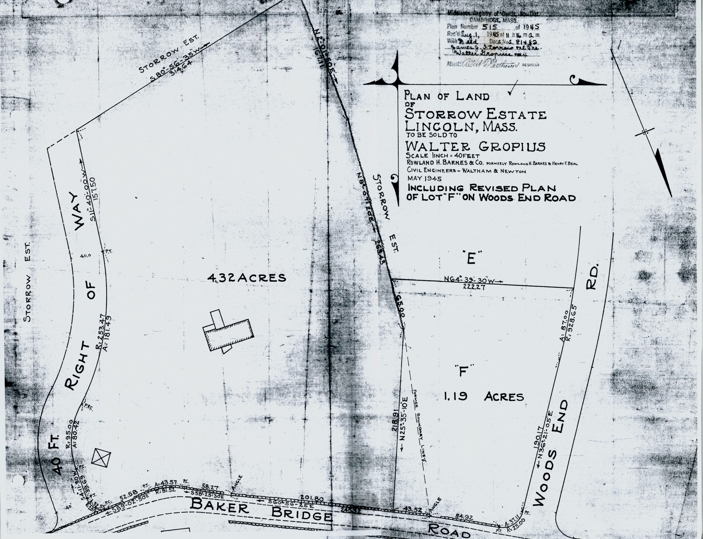
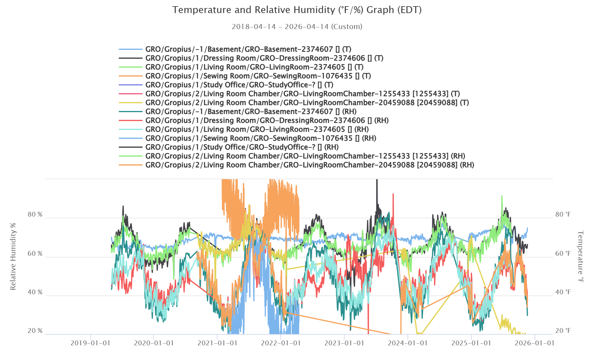
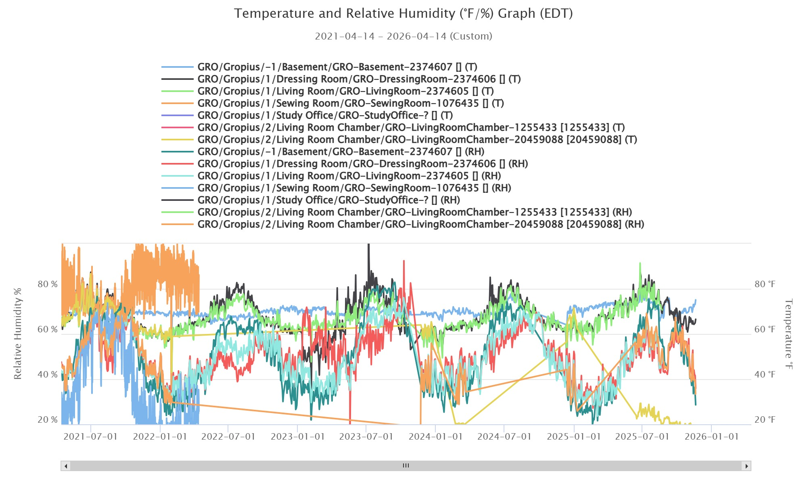

1945 Site Context

A graphic anchor for the estate context, used here as the visual threshold into the archive.
Research, monitoring, and condition records brought into one navigable surface.
This version keeps the original Gropius House content depth intact, but reorganizes it into a cleaner, trend-forward interface: guidance, floor-based environmental readings, repair history, pest comparison, and field imagery all tied back to preservation interpretation.

Keep comparison and diagnosis separate. The interface organizes evidence before judgment.
Floor plans, year and month filters, repairs logs, pest boards, and image archives work together.
How To Read
The original guidance is preserved here as an interpretive sequence. Each card is meant to keep the user from jumping straight from a value spike to a repair conclusion.
House Basics / Drawings
Drawings remain the orientation point for everything else. The environmental atlas, repairs archive, and image records all make more sense when they stay grounded in plan logic and building fabric.
Long-range graph
A retained graph view showing multi-year overlap across room loggers and RH/temperature behavior.

Focused graph
A tighter range view for reading shorter-term variance and cross-sensor relationships with less visual noise.

Environmental Atlas
Floor-based markers, category filtering, period controls, and detailed values are preserved from the earlier viewer. The presentation has been rebuilt to feel more intentional and legible.
Level 01
Level 02
Level 00
Repairs / Interventions
These entries are preserved as a quick-use timeline, filtered by feature category. The list supports interpretation; it does not replace technical diagnosis.
Archives
The date comparison logic and image grouping remain intact. If the original `images/` asset folder is dropped back in later, these cards will automatically show the same visuals again.
Pest Comparison
Latest Site Images